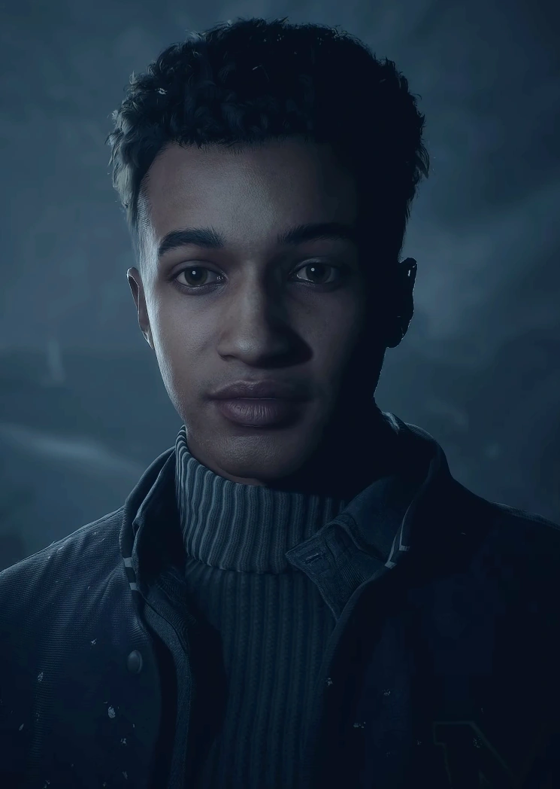

Matt is part of the prank, but doesnt really have a central role. Him and Ashley are kind of just there...
Matt follows Emily for the entire start of the game, chauferring her until the tower segment. The only point we see their two paths diverge is when Emily catches up with Mike and Matt goes to talk two Ashley. Based on their decisions during this segment, Emily and Matt can bicker during the fight Emily has with Jess.
Matt follows Emily to the Tower where they then fall into the mines. Matt can chose to help Emily, with a death depending on what you do with the flare and whether you help Emily or not. .
Matt shows up at the end of the game with Jessica in the Mines. The two enter a chase scene with Handigo before they can finally survive the night.
Matt spends the entire game as a side piece to Emily, which is really upsetting because he has a pretty interesting character on his own. Him and Jess could have been much bettwer represented within the story, but end up being pushed to the side becasue of a bloated cast and their roles as the secondary members of their respective couples.
Matt's Score: 5/10
